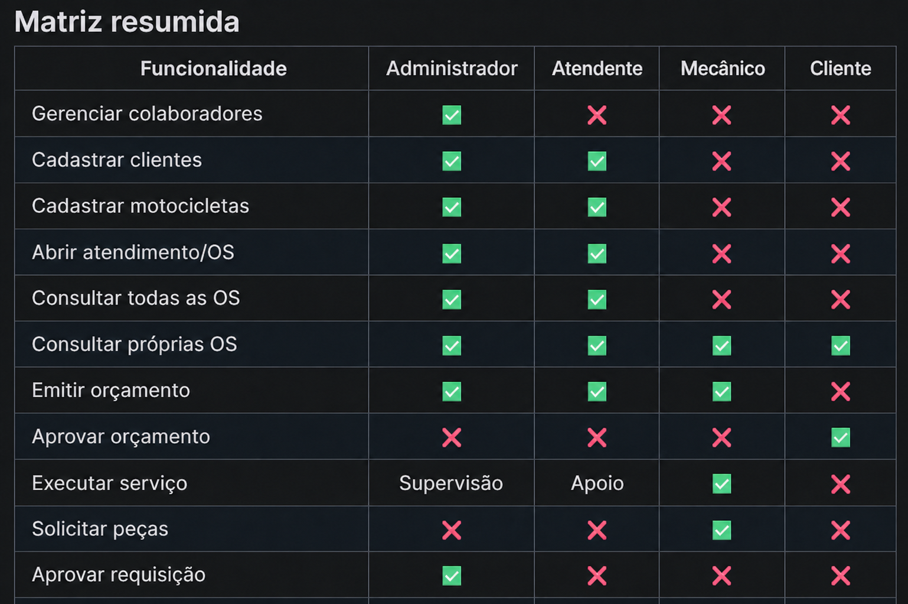

Uma introdução prática ao sistema Garagem 66, seus atores, responsabilidades e principais fluxos de atendimento.
01 — Apresentação
A Garagem 66 é uma aplicação web para organizar o atendimento de uma oficina de motocicletas, conectando administração, recepção, execução mecânica e participação do cliente em um único fluxo rastreável.
Clientes, motocicletas, abertura e acompanhamento de ordens de serviço.
Serviços, peças, valores e decisão eletrônica do cliente.
Atribuição ao mecânico, mudanças de status e histórico da OS.
Cadastro de peças, requisições, aprovação e baixa automática.
Abra https://garagem-66.vercel.app. A aplicação começa desconectada. Entre com um dos acessos demonstrativos da próxima página e, ao trocar de ator, use sempre o botão Sair.
02 — Atores e acesso
| Ator | Função | Usuário | Senha |
|---|---|---|---|
| Luiz Henrique | Administrador | luiz.henrique | Garagem66@Demo |
| Fabio Almeida | Atendente | fabio | Garagem66@Demo |
| Danrley Santos | Mecânico | danrley | Garagem66@Demo |
| Danilo Jota | Cliente | 52998224725 | Garagem66@Demo |
Supervisiona toda a oficina, gerencia colaboradores e estoque, atribui responsáveis, decide requisições e reabre uma OS quando necessário.
Recebe o cliente, registra seus dados e sua motocicleta, abre atendimentos, acompanha ordens e prepara orçamentos.
Consulta suas ordens, analisa o serviço, participa da elaboração do orçamento técnico, executa o trabalho e solicita peças.
Consulta apenas seus dados, motocicleta, ordens e histórico; analisa, aprova ou recusa o orçamento apresentado.
O menu lateral muda de acordo com o perfil. Isso é intencional: cada ator visualiza somente as áreas relacionadas à sua responsabilidade. O nome e a função do usuário conectado aparecem no canto inferior esquerdo.

03 — Roteiro principal
O roteiro abaixo permite que o avaliador experimente a colaboração entre os quatro perfis sem precisar conhecer previamente a estrutura do sistema.
Entre como Luiz. Consulte o Dashboard, Clientes / Colaboradores, Ordens, Estoque e Requisições. No campo “Exibir”, selecione “Colaboradores” e confirme Luiz, Fabio e Danrley.
Esperado: indicadores gerais e equipe ativa aparecem com dados reais da API.
Saia e entre como Fabio. Em Clientes, consulte Danilo Jota. Em Motocicletas, confirme que a motocicleta está vinculada ao proprietário. Abra Ordens → Novo atendimento, informe o problema e prossiga.
Esperado: uma OS é criada e passa a compor o histórico do cliente.
Acesse Orçamentos, selecione uma OS elegível, inclua serviços e peças com quantidade e valor e emita a proposta. O orçamento deve ficar como Aguardando aprovação.
Esperado: o total é calculado e o orçamento fica disponível para o cliente.
Saia e entre como Danilo. Abra Orçamentos, clique no orçamento pendente, confira serviços, peças e total e escolha Aprovar orçamento.
Esperado: a OS é liberada para execução e o histórico registra a decisão.
Entre novamente como Luiz e depois como Danrley. Abra o sino do cabeçalho.
Esperado: os dois perfis recebem a atualização de que o orçamento foi aprovado.
04 — Continuação do roteiro
Como Danrley, abra Minhas ordens e clique no número da OS para ver a página completa. Consulte problema, motocicleta, orçamento e histórico. Em Requisições, escolha a OS, a peça, a quantidade e envie.
Esperado: a requisição nasce como Pendente e aguarda exclusivamente a decisão administrativa.
Entre como Luiz, consulte antes a quantidade da peça em Estoque e depois abra Requisições. Localize a solicitação de Danrley e clique em Aprovar.
Esperado: a requisição muda para Aprovada e a quantidade solicitada é descontada automaticamente do estoque.
Volte ao perfil Danrley. Na OS, use “Retomar” caso esteja aguardando peças e, ao terminar, clique em Concluir.
Esperado: a OS passa para Concluída e o histórico preserva cada mudança, data e responsável.
Entre como Danilo e abra Minhas ordens ou Histórico. Clique na OS concluída.
Esperado: Danilo visualiza o progresso final e o histórico completo, sem acessar dados de outros clientes.
05 — Referência rápida
Ao final, o avaliador deverá compreender que a Garagem 66 não é apenas um conjunto de telas: ela representa um processo colaborativo, com responsabilidades separadas, decisões rastreáveis e atualização consistente entre atendimento, execução, cliente e estoque.